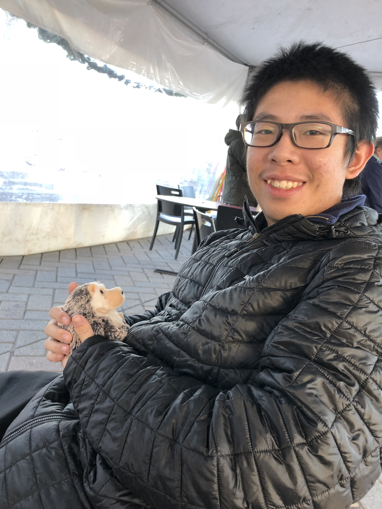
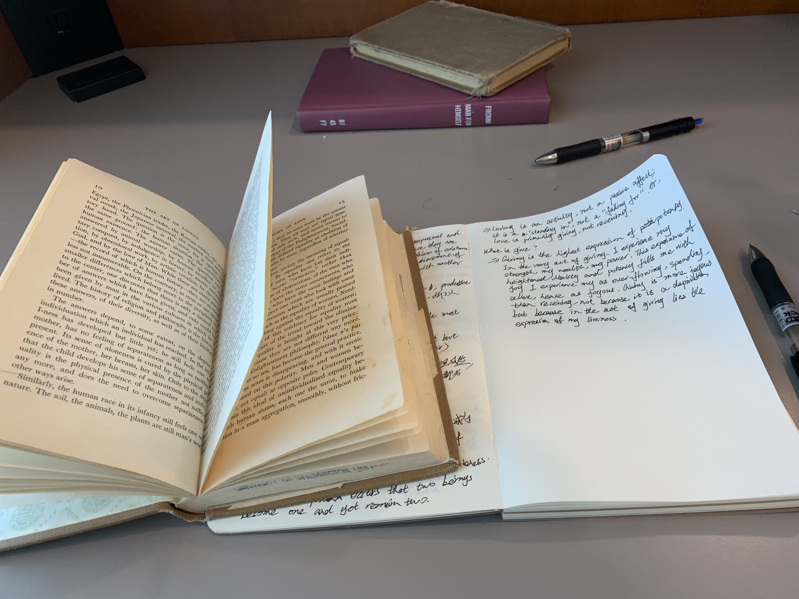
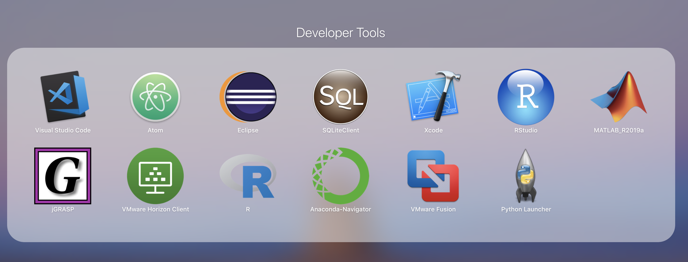
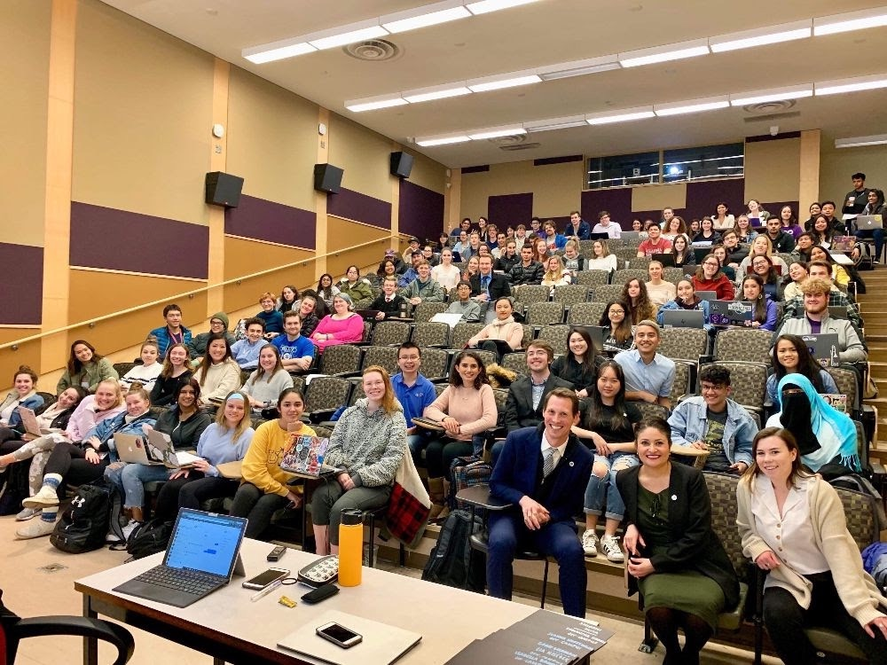
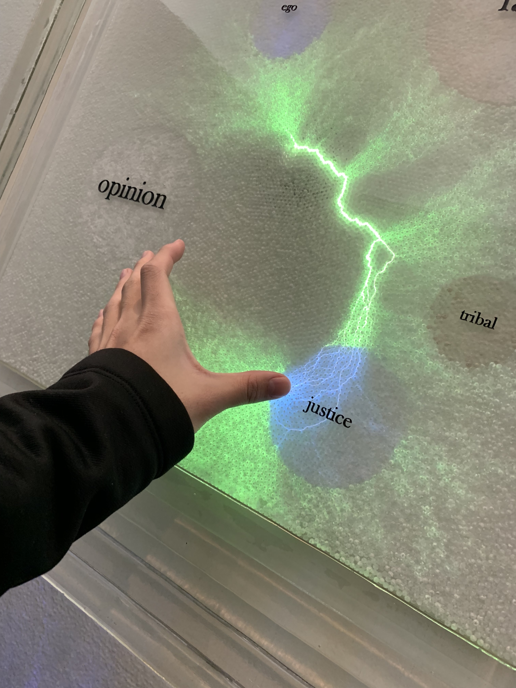

Albert EinsteinTwo things are infinite: the universe and human stupidity; and I'm not sure about the universe.
Student in UW
zg44@uw.edu
Who is me?
I'm Gibbs Geng (Zixuan), a senior studying Computer Science. My major interest lays in Database, nd I have a broad interest in Algorithm Design, Software Engineering and Machine Learning. I am currently an undergraduate research assistant in UW database group since March 2020 and in the summer I was working as an REU intern with Prof. Dan Suciu on the explanation project in which we give explanations for bad labeled entities given black-box classifier. I am also a teaching assistant for introduction to databases since January 2020. And an ICPC region contestant last year!
Academics:

I'm current a sophomore at UW.
I discovered my interest in Computer Science, a major said to be impossible to get in for incoming students, after I came here. I felt pretty
lucky to be one of the last-year-students before their start of "DTM." Yep, below are a few of skills I currently have and pages about what
I have done each quarter after I came here.
- Java: I'm kind of proficent at that since it's the first programming language I have been encountered with and I spend most of me time in it(took a lot of courses too!). Not only have I took the two basic programming courses here,CSE142 and CSE143, I was also an auditor both in CSE373 and CSE311.
- Python: I think that I'm doing well in python. Although I'm not oficially regislated any course in this area, I actually went to most of the lectures and done homeworks in CSE163, kind of the equivalent course as CSE143 in Java. I wrote several programs to solve different kinds of problems.
- SQLite/XQuery (saxon he)/SQL Server on Windows Azure (Microsoft's Web Service)/Amazon ec2: I'm famaliar with these dababase-oriented tool through my learning in CSE414.
- yperText Markup Language (HTML)/Cascading Style Sheets (CSS)/avaScript (JS)/ Asynchronous JavaScript and XML (Ajax)/PHP web services: I'm kind of famaliar as I learn CSE154 online. This is partially a demonstration of my skills in this area.
- C++: I only have some basic ideas about this language, since I didn't formally learn this language.
- R: I have some experience with this language when studying STAT311.
- Matlab: I learned this tool in my AMATH301 class.

s
Activities and Social Life
I'm now actively involved in campus activities. As one of the UW students, I am trying my best to create
a better environment for every student here in UW.
Here is a list of activities I'm currently involved in.
Here is a list of activities I'm currently involved in.
- The ASUW SENAROR: Basically, we are concerning what is happening in and around campus, and making changes, through resolutions and regislations, to better the lives of people in these areas.Basically, we are concerning what is happening in and around campus, and making changes, through resolutions and regislations, to better the lives of people in these areas.
- Alder Hall Council member: As a member in the hall council, I'm helping biulding a better community, creating a better environment for all residents in this building.
- FUITS Facilitator: Help organize events around the campus to better students life
- SBS Club Officer: As RSO in UW, we hold several events each quarter. We are particularly interested in board games and games requiring a lot of speaking and debating. We serve all UW students, but espicially Chinese students.
- An ASUW volunteer: help origanize activities held by ASUW
Things I love!
- Trip and Nature:
- Bicycling:
- Board Games:
- Reading and thinking
- Cooking!